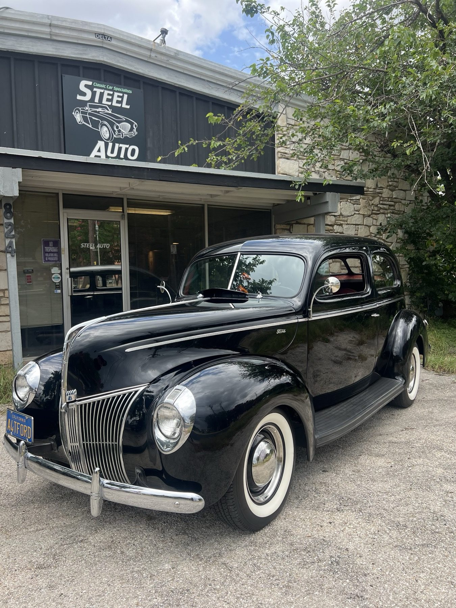

Full diagnosis
Honest assessments for classics: pre-purchase inspections, project planning and budgeting, storage prep and one-on-one consultations.
- Pre-purchase inspections
- Project planning
- Storage prep
Classic car garage · Round Rock, TX
British roadsters, American classics and muscle cars. Enthusiasts on the tools. By appointment.

By appointment only
What we do
Engine, brakes, electrical and more, done the old-school way.
Honest assessments for classics: pre-purchase inspections, project planning and budgeting, storage prep and one-on-one consultations.
Drum and disc work, from complete overhauls to drum to disc conversions and custom brake lines.
Ignition, carb rebuilds, jetting and multi-carb synchronization so the car starts and runs the way it should.
Tracking down shorts and faults, replacing harnesses and building custom wiring.
Power steering conversions, leak repair and full suspension rebuilds that keep the classic look.
Period-correct upgrades or modern conversions like GM LS and Ford Coyote, plus full engine rebuilds.

Who we are
Locally owned and operated, now on Brandi Lane in Round Rock. Our crew lives and breathes vintage iron.
British roadsters, American classics and muscle cars, plus some jobs other shops won't touch. We'd rather talk it over in person.
Around the shop


Postcards from customers
4.6 of 5 from 52 Google reviews
Post card✦ The guys at Steel Classic Garage really came through for us today. My dad and sister had been working on our 1966 Mustang since her engagement last year, and she planned to drive it home from the ceremony. We wrestled with some mechanical issues for the past few days, and with the ceremony tomorrow we HAD to get some help.
Post card✦ Steel Classic Garage is a must have contact if you have a classic or vintage vehicle. Brendan at Steel Classic is amazing and is very knowledgeable when it comes to everything on my vehicle. I took my classic 1965 Mustang Fastback 2x2 with the original 289 and 4 speed manual transmission to Steel to install a Holly Sniper II EFI kit.
Post card✦ Wanted to give a shout out to Steel Classic Garage and their mechanics for gettin my 1972 chevy C10 in tip top condition and workin out all the kinks that it had - customer service was beyond exceptional and it truly is great seeing a bunch of guys that are genuine car enthusiasts that have a passion for working on cool rides.
Post card✦ I cannot say enough great things about Steel Classic Garage! I’ve taken my mid-’50s Pontiac here a handful of times for different projects, and every experience has been outstanding. The crew listens to my goals, offers their expertise and recommendations, and communicates clearly throughout the entire process.
Call or stop by
802 Brandi Ln, Round Rock, TX 78681 Directions
Small shop, appointment only. Call or message to book.